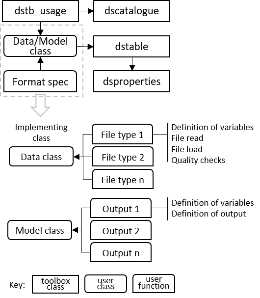

dstoolbox
dstoolbox is a collection of classes used to store and manage access to multi-dimensional data sets. These include:
dstable, holds a collection of one or more datasets with one or more common dimension vectors.
dsproperties, defines the struct used to assign the metadata to a dstable.
dscatalogue, manages a catalogue of data sets
that handle all types of data set (eg imported or model data) which are loaded into dstables and catalogued using dscatalgue.
Contents
Schematic
These classes can be used together as illustrated in the following figure:

Usage
The toolbox is designed to hold multi-dimensional data sets, including meta-data of the variables and all dimensions and manage access to a collection of classes that hold data sets using a catalogue. In the outline dstb_usage is a class to illustrate how dstable, dsproperties and dscatalgue are used. Data are loaded into a dstable with relevant metadata added to the table and made accessbile using dsproperties. Each time a class adds data a record is added using dscatalogue. The Format Spec are implemented with functions, indicated by File Type and Output Type, that define the meta-data of the data set being saved (and any input parameters, or details needed to read and load data from a file, depending on the application).